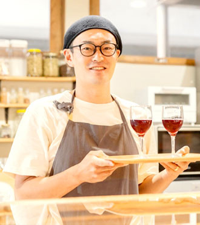
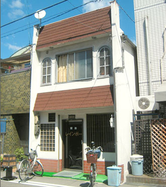
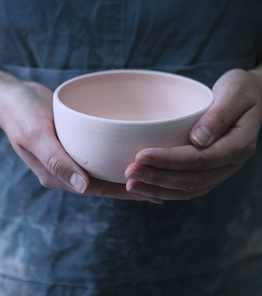
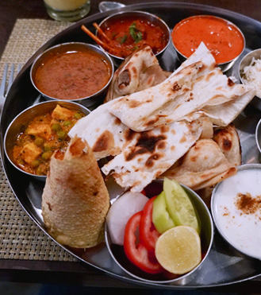
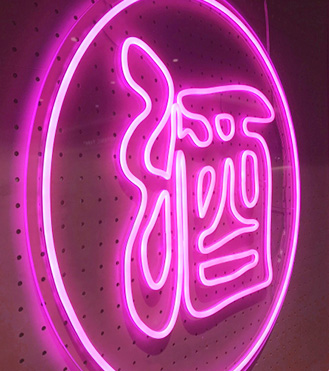

06

葡萄のとき / Wine Bar
店主のこだわりが垣間見えるワインの種類の豊富さ。さらに試行錯誤を重ね、追及されたワインに合う一品はどれも絶品です。
05

喫茶レインボー / 喫茶店
マスターの入れるコーヒー、ナポリタンやサンドウィッチなど懐かしさを感じる味に心が落ち着きます。
04

灯 / 陶芸教室
陶芸教室やイベントを開催している灯。とても気楽な店主で、初めての方も気軽に体験できます。
03

サワディーナ / インドカレー
スパイスを存分に使いながら、まろやかさも感じる奥の深い味。本場の味を楽しめるビリヤニもイチ押しです。
02
buranco / 古着屋
古いものとか誰かが着てたものって、新品にはない味とか思いとかが詰まってる。この町もそんな感じ。
01

ヒガスミショクドウ / 居酒屋
ネオ大衆居酒屋がopenしました！古くからのお店が並ぶ中、若い人でも集まれるようにと。おでんがとにかく美味い。